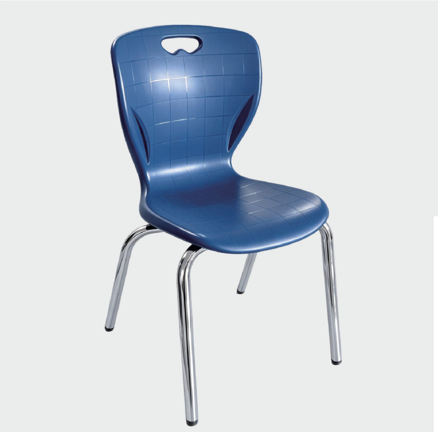

أدلة شراء وتوريد الأثاث المدرسي
أدلة شراء وتوريد الأثاث المدرسي
معلومات تساعدك على إعداد طلب واضح
اختر الدليل المناسب لعملك: مراجعة بنود المناقصة، تجهيز تشكيلة للتوزيع، أو مقارنة مواصفات الطاولات والكراسي. هذه أدلة عملية؛ تعتمد المواصفات والوثائق النهائية على كل طلب.

مواصفات الأثاث المدرسي للمناقصات: قائمة مراجعة قبل طلب التسعير
قائمة عملية لمراجعة مواصفات الأثاث المدرسي للمناقصات: جدول الكميات، المقاسات، المواد، العينات والتعبئة، قبل طلب عرض سعر من المورد.

أثاث مدرسي بالجملة للموزعين: كيف تقارن العروض قبل الشراء؟
دليل شراء أثاث مدرسي بالجملة للموزعين: قارن الموديلات والمواصفات والعينات والتعبئة وشروط العرض، وجهز طلب تسعير واضحًا لسوقك.
مواصفات الطاولات والكراسي المدرسية: كيف تقرأ جدول المنتج؟
افهم مواصفات الطاولات والكراسي المدرسية: الأبعاد والوحدات وارتفاع المقعد وخامة السطح وطبقة HPL والهيكل، وكيف تراجع تقارير الاختبار.
قوالب تساعد على تجهيز الاستفسار
استخدم القوالب لتجميع بياناتك قبل إرسالها عبر قنوات التواصل الحالية. القيم الفارغة مخصصة لك، وليست أسعارًا أو شروط توريد مؤكدة.